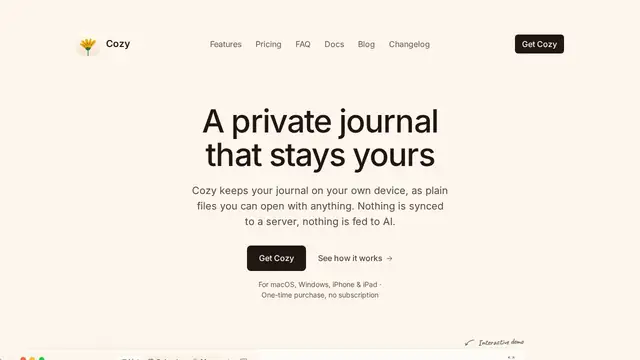
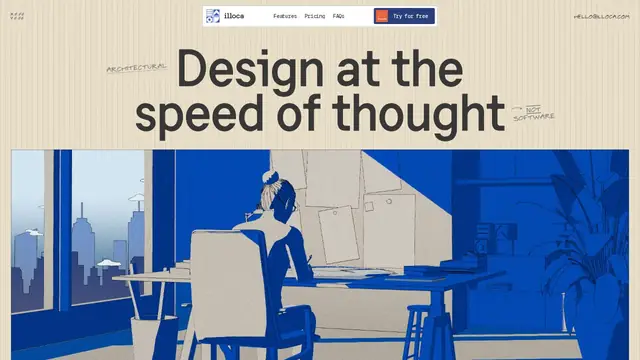
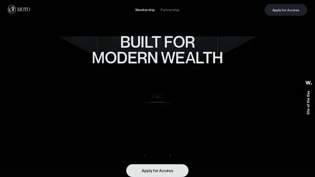
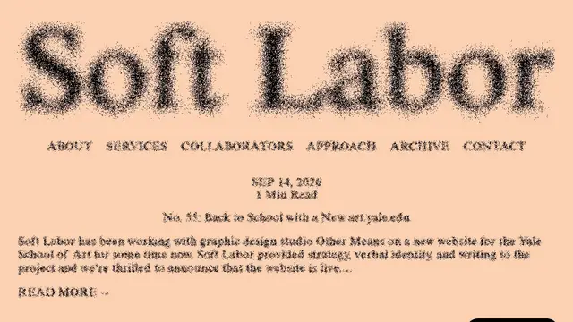
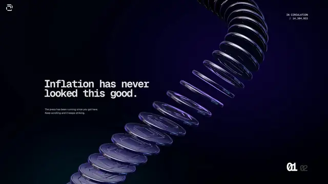
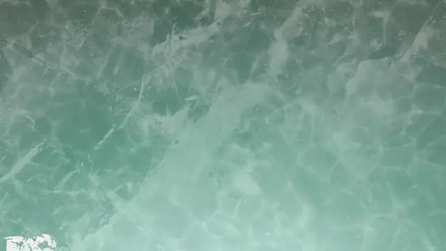

Momiji
湖边枫树从黎明转到月色；拨落叶、晃灯笼，最好开着声音慢慢玩。
打开网站 ↗它是什么：一座漂在水上的红枫小岛：从黎明到月夜自动流转，落叶可以拨弄，灯笼会晃，水面有涟漪。
好在哪：它把“氛围”做满了：光线、声音、小互动同时在线，像一张会动的明信片。
怎么做到的：
- 整座岛是做好的 3D 模型，用新一代 WebGPU 渲染，所以细节多也跑得动。
- 天空颜色、太阳角度和灯光强度随时间一起插值，形成日夜循环。
- 声音按位置播放，靠近灯笼、水边听到的不一样。
完整技术拆解
今日拆解 · Momiji
- Live: https://momijigari.vercel.app/
- Gallery: https://mesh3d.gallery/experiment/momiji-a-maple-from-dawn-to-moonlight
- Author: Thomas Gertenbach（HTML meta
author） - Bundle:
/assets/index-DIPw4V9z.js（约 1.9 MB）+/assets/index-CbKQuawD.css - 证据目录：本文件夹（
index.html、JS/CSS、noiseVolume.worker-*.js、glb 头、og-image.jpg）
为何选它
8 条里它是唯一把「一整棵可交互的红枫岛」做成 WebGPU 场景的：黎明→月色的日光循环、落叶拨弄、灯笼晃动、水面涟漪、空间音频同时成立。视觉冲击强，技术栈也深（Three r183 WebGPU + TSL + GLB + Bloom），比纯落地页或 App UI 更适合拆开看。
实际在源码里找到的技术栈
Od="183"；window.__THREE__=Od；字符串 three.js r${Od} webgpu；WebGPURenderer 出现 36 次TSL、MeshPhysicalNodeMaterial、MeshStandardNodeMaterial、BloomNode、PassNode；内含 UnrealBloom 风格 pass 名cn.version="19.3.0"；TV.createRoot(...).render(st.jsx(G.StrictMode,{...}))；未找到 @react-three/fiber / useFrame / DreiHowlerGlobal / Howl / usingWebAudio / new AudioContext；播放类型含 temple-bell、wind-chime、arc-open/arc-close/arc-step。bundle 内未出现明确的 howler@x.y.z 版本字符串GLTFLoader、DRACOLoader、KTX2Loader、MeshoptDecoder；资源 /grove/maple-tree.glb、/grove/lantern.glb（HTTP 200）/assets/noiseVolume.worker-CvTZWSwE.js；体积常量 [128,256,128]，Jenkins 风格位混哈希（推测用于雾/体积噪声，非 Perlin 字符串）timeOfDay、dayCycleSpeed、sunHeading、sunIntensity、exposure、fogDensity；每帧近似 timeOfDay += dt * dayCycleSpeed / 60#version 300 es 出现在 Three 内置 WebGL 回退路径，主路径是 WebGPU/WGSLnoscript 文案也写明：*interactive WebGPU scene*。
核心效果怎么工作（源码 + 标明推测）
1. 场景资产（确认）
- 结构枫树：
/grove/maple-tree.glb - 灯笼：
/grove/lantern.glb（错误文案提到 *Lantern swing* 挂点、纸质发光材质） - 字重：Yuji Boku woff2（标题「紅葉」一类书法 UI）
2. WebGPU 渲染管线（确认）
React UI 壳（音量、日弧、错误态）
↓
Three WebGPURenderer + TSL NodeMaterial
↓
场景图：岛 / 树 / 落叶实例 / 水面 / 雾 / 灯笼
↓
后处理：BloomNode（含 lanternBloom / lanternLight / lanternFlicker 等参数）调试面板字符串暴露了成组参数：Water（折射、涟漪、落叶浮力）、Lantern（bloom/flicker/range）、Bloom（bloomEnabled）——推测生产 UI 用自研 mini-panel，样式刻意贴近 lil-gui。
3. 黎明 → 月色（确认）
状态里有 timeOfDay 与 dayCycleSpeed；更新式：
timeOfDay = wrap(timeOfDay + dt * dayCycleSpeed / 60)再驱动 sunHeading / sunIntensity / exposure / fogDensity（具体映射曲线未全部展开，推测为预烘焙或 smoothstep 色温曲线）。
4. 交互与音频（确认 + 推测）
- 指针 / 射线：
pointer、raycast高频出现；落叶与水面有专门参数（waterLeafStrength、puddleLeafFloatTime、testWaterRipples） - 灯笼：场景对象名含
Lantern swing；参数lanternFlicker/lanternBloom - Howler：
onMark→play({type:"wind-chime"})；日弧 UI →play({type:\arc-${ue}\})（arc-open/arc-close/arc-step）；另有temple-bell screenWind()：推测把指针/姿态映射成风场，推动落叶与飘带
5. 伪代码（忠实于源码结构）
boot:
createRoot(<App/>) # React 19 UI
renderer = new WebGPURenderer(...) # three r183
grove = await GLTFLoader(/grove/maple-tree.glb)
lantern = await GLTFLoader(/grove/lantern.glb)
noiseVol = Worker(noiseVolume) # 128×256×128 hash volume
howl = new Howl({ src: /audio/... }) # webm/mp3
each frame:
timeOfDay = wrap(timeOfDay + dt * dayCycleSpeed/60)
updateSunFogExposure(timeOfDay)
wind = screenWind(pointer)
stirLeaves(wind); rippleWater(contacts)
swingLantern(pointer); flicker(lanternLight)
render TSL materials → BloomNode → canvas
on UI:
arc drag → howl.play("arc-*")
mark/chime → howl.play("wind-chime" | "temple-bell")如果我来重做（步骤清单）
- Vite + React 19，挂一个全屏 canvas；Three r183 走
three/webgpu+ TSL。 - 准备枫树 / 灯笼 GLB（Draco/KTX2 可选），用
GLTFLoader装入；给灯笼留 swing 挂点。 - 写
timeOfDay循环，映射太阳方向、强度、雾密度、曝光。 - 落叶用
InstancedMesh+ 简易风场/指针力；水面用 TSL 做折射+涟漪 uniform。 - 后处理加
BloomNode，灯笼单独抬lanternBloom。 - Howler 铺
wind-chime/temple-bell/ 日弧 UI 音效；默认请用户开声。 - 无 WebGPU 时给出明确错误态（原站有
Scene unavailable）。
证据文件
index.html、index-DIPw4V9z.js、index-CbKQuawD.cssnoiseVolume.worker-CvTZWSwE.jsmaple-tree.glb.head、lantern.glb.head（各 1 KB 字节头）og-image.jpg（官方 OG；面板缩略图另用 mesh3d CDN preview，因 headless 无 WebGPU adapter）
零基础也能看懂。先认识这件作品用到的技术，再学一个知识点。
1技术栈小白版
只列拆解里在源码中确认过的技术。点开看它在这件作品里做了什么。
Three.js r183（WebGPU 渲染器）
在这件作品里用新一代的 WebGPU 路径，画出整座红枫小岛、水面和灯笼。
怎么认出来在控制台输入 __THREE__ 能看到版本号（这里是 "183"）。如果浏览器不支持 WebGPU，这个站会显示「场景不可用」。
TSL 节点材质
在这件作品里岛上各种物体的材质都用这类节点材质来做；调试面板里还有一组水面参数（折射、涟漪、落叶浮力）。
怎么认出来水面会折射、会起涟漪，材质在不同光线下有细腻变化。
BloomNode 泛光
在这件作品里让灯笼的光向外渗开；灯笼还有自己单独的泛光和闪烁参数，所以夜里格外温暖。
怎么认出来亮的东西边缘有柔和的光晕，尤其在暗背景上。
React 19.3.0（界面外壳）
在这件作品里负责音量、日弧和出错时的提示这些普通界面；3D 画面由 Three.js 负责。
怎么认出来看不出来，它管的是 3D 画面以外的那层界面。
Howler（网页音效库）
在这件作品里风铃声、寺庙钟声，还有拖动日弧时的小音效。
怎么认出来你一操作就有配合的声音。
GLTFLoader + 模型 / 贴图压缩
在这件作品里加载枫树（maple-tree.glb）和灯笼（lantern.glb）这些模型，并支持几种压缩格式（Draco、KTX2、Meshopt）。
怎么认出来模型很精细，但加载不算慢。
Web Worker（后台计算）
在这件作品里在后台算一大块噪声数据（128×256×128）。拆解推测它用于雾一类的体积效果。
怎么认出来看不出来，但它让页面在计算时不卡。
2今日知识点
色彩基础：色相、明度、饱和度（还有色温）
描述任何一个颜色，只需要问三个问题：
- 色相：它是哪一「家」的颜色？红、橙、黄、绿、蓝、紫……
- 明度：它有多亮？加白变亮，加黑变暗。
- 饱和度：它有多「纯」？越纯越鲜艳，越灰越低调。
再加一个特别好用的概念：色温。偏橙黄的光让人觉得暖（烛光、夕阳），偏蓝的光让人觉得冷（阴天、月夜）。色温几乎直接决定画面的情绪。
Momiji 的「黎明 → 月色」就是一堂色彩课。代码里有一个叫 timeOfDay（一天中的时间）的数字一直在往前走，它同时控制太阳的方向、太阳的亮度、曝光和雾的浓度。于是一天之中，画面的明度、色调和氛围都在慢慢变化。
特别值得看的是夜里：整个画面暗下来、偏冷，只有灯笼那一点暖光——冷色大背景里的一小块暖色，你的眼睛会第一时间被它吸过去。这是一个在海报、电影里都很常用的配色技巧。
一句话记住：色相决定是什么颜色，明度决定亮不亮，饱和度决定艳不艳；色温决定暖还是冷，也就决定了情绪。
它从哪里来
包豪斯的老师约翰内斯·伊顿（Johannes Itten）把色彩对比整理成一套可以教的方法，后来写成《色彩艺术》（1961）。
在包豪斯上过伊顿的课、后来也在那里任教的约瑟夫·阿尔伯斯（Josef Albers），写了《色彩的互动》（Interaction of Color，1963）。他用一个个彩色纸片实验说明：同一个颜色放在不同的背景上，看起来会很不一样。
印象派画家莫奈在 1890 年代画了一组《鲁昂大教堂》：同一座教堂的正面，在不同的时间和天气下画了三十多幅。主题不变，光和颜色一变，情绪就全变了——和 Momiji 的日夜循环是同一个想法。
经典参考
- 约瑟夫·阿尔伯斯《色彩的互动》（1963）色彩入门最经典的一本书，用纸片实验讲颜色之间怎么互相影响。
- 莫奈《鲁昂大教堂》系列（1890 年代）同一座建筑在不同光线下的几十种颜色，网上搜「Rouen Cathedral Monet」可以并排看。
- Adobe Color上传一张照片就能提取出它的配色，还能看到每个颜色的色相、明度、饱和度。
- 在 Momiji 里截两张图：一张白天，一张夜里（可以拖动日弧，或者等它自己转到夜里）。
- 打开手机相册的「编辑」，用亮度、饱和度、色温（暖色调）几个滑杆，试着把白天那张调成「像夜里」。你会发现，主要就是在降低明度、把色温往冷调。
- 在夜里那张截图上，找出唯一的暖色在哪里。想一想：为什么你的眼睛第一眼落在那儿？
- 用一句话写下：「这张图的色相主要是___，明度___，饱和度___，色温偏___。」
小词典
- 色相（hue）
- 颜色的「种类」，比如红、黄、蓝。
- 明度（value）
- 颜色有多亮或多暗。
- 饱和度（saturation）
- 颜色有多鲜艳；饱和度低就接近灰色。
- 色温
- 光偏暖（橙黄）还是偏冷（蓝）。
- 曝光（exposure）
- 整个画面被「提亮」或「压暗」的程度，像相机的进光量。
3知识地图进度






设计雷达 · 每天 8 个值得看的网站、App UI 和网页小游戏